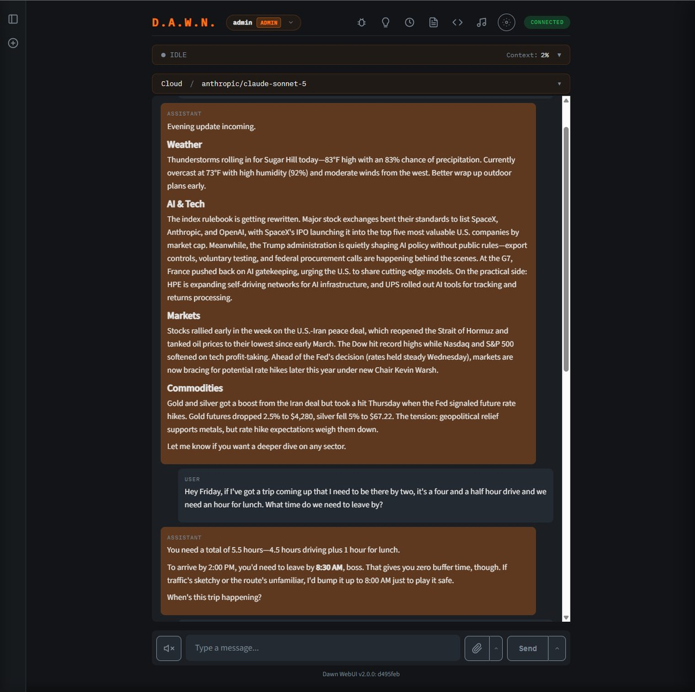
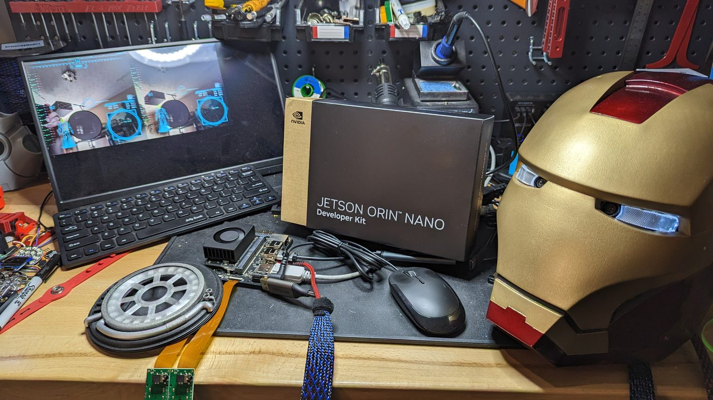

D.A.W.N.
Digital Assistant for Workflow Neural-inference.
Your own private AI assistant — a
production-grade JARVIS, written in C.
Overview
I built DAWN from scratch in C/C++ for embedded Linux. It's a full voice assistant — GPU-accelerated speech recognition, high-quality text-to-speech, and today's best large language models. It's designed for NVIDIA Jetson, but also installs on x86 Linux and cloud hosts.
Unlike cloud-dependent assistants, DAWN gives you complete control — your conversations stay on your hardware and your data stays private. With 20+ built-in tools, multi-room satellites, and a full web interface, it holds up as an everyday assistant.
DAWN also supports extended thinking, parallel tool execution, streaming responses, and memory that persists across sessions. Every tool is compiled into the binary — there's no plugin marketplace, no scripting layer, no arbitrary code execution, and no third-party cloud service storing your data or credentials. That's the main difference from the plugin-based agents DAWN gets compared to: a lot of the attack surface those systems have to worry about simply isn't there.
Multi-Provider LLM Integration
DAWN connects to the best AI models available — OpenAI GPT-series, Anthropic Claude, Google Gemini, or any model through the OpenRouter gateway. Prefer to stay offline? Run fully local models via Ollama or llama.cpp. Switch providers on the fly from the web interface.
- Streaming responses with ~1.3 second perceived latency to first audio
- Extended thinking / reasoning mode (Claude, OpenAI, Gemini, local)
- One OpenRouter key fronts hundreds of models from every major vendor
- Parallel tool execution for concurrent API calls
- Conversation context management with automatic summarization
- Vision AI for image analysis and document understanding
- Local by default — even with a cloud LLM, only your prompt and tool results are sent; your documents, memories, and conversation history stay on your hardware

It Actually Remembers You
Most assistants forget everything the moment a chat ends. DAWN doesn't. At the end of each conversation it consolidates what mattered — the people in your life, your preferences and routines, the projects you're working on — into a memory that carries across every future conversation. Come back a week later and it still knows what you were talking about.
It's the piece I've put the most time and money into, and it's what makes DAWN feel less like a chatbot and more like a JARVIS that actually knows you.
- Cross-conversation recall: facts, preferences, and context persist across every session — it picks up where you left off
- Entity graph: people, places, and things are stored as a connected web of relationships, not a flat list
- Sleep-style consolidation: memories are extracted after a conversation ends, so a live chat never slows down
- Hybrid recall: keyword + semantic search finds the right memory even when you phrase it differently
- Understands time: "last month," "the other day," and "yesterday" resolve to real dates
- Self-correcting: newer facts supersede old ones, and confidence fades over time
- Yours alone: every memory lives in a local database on your hardware — never uploaded
Full Web Interface
A complete web UI served directly from DAWN — no separate web server needed. Voice and text input, real-time streaming responses, conversation history, and full system configuration. Switch LLM providers, adjust model parameters, and toggle extended thinking — all from the browser.
- 7 built-in color themes
- Voice input with push-to-talk and wake word
- LLM provider/model switching and parameter control
- Conversation history with full text search
- Document library with drag-and-drop upload
- Vision/image upload for AI analysis
- Calendar, email, contacts, and memory management
- Messaging channels — chat with DAWN from Telegram, Slack, Discord, or SMS
- Debug mode with raw LLM output

20+ Built-in Tools
Every tool is native C — no plugins, no scripting layers, no external dependencies at runtime.
Multi-Room Satellites
One server, one port, every room. DAWN's satellite system puts a voice assistant anywhere in your home — from a Raspberry Pi with a touchscreen to a tiny ESP32 push-to-talk module.
- Tier 1 (Raspberry Pi): Local ASR/TTS, SDL2 touch UI, text-only to server
- Tier 2 (ESP32): Streams raw PCM audio, server handles all processing
- Unified WebSocket protocol — all tiers on the same port
- Capability-based routing — server auto-detects device type
- Pre-shared key authentication for secure registration
Private by Design
DAWN runs entirely on your hardware. Speech recognition uses GPU-accelerated Whisper locally. TTS uses Piper — no cloud calls for voice processing. There is zero telemetry, zero tracking, zero data collection.
- GPU-accelerated Whisper ASR on Jetson (CUDA)
- Piper TTS with ONNX Runtime — fully offline voice
- Optional fully local LLM via Ollama or llama.cpp
- All data stored in local SQLite databases
- Encrypted credential storage with libsodium
- No telemetry. No analytics. No phone-home.

Recommended Hardware
DAWN runs on a range of hardware, from budget Raspberry Pi to NVIDIA Jetson.
| Platform | Price | Role | Notes |
|---|---|---|---|
| Jetson Orin Nano Super | $249 | Primary | Best value. CUDA GPU for Whisper ASR + local LLM |
| Jetson Orin NX 16GB | ~$1,000 | Premium | More GPU power for larger local models |
| Jetson AGX Orin 64GB | ~$2,000 | Enthusiast | Maximum GPU + RAM for running full-size local LLMs |
| Raspberry Pi 5 | $125 | Budget / Satellite | No GPU acceleration. Best as Tier 1 satellite |